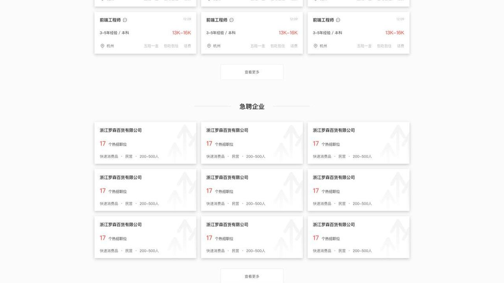
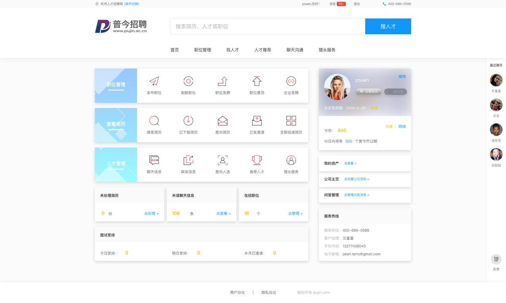
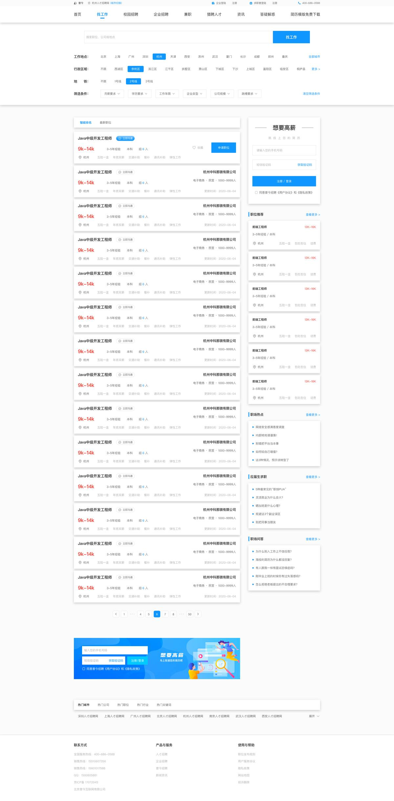
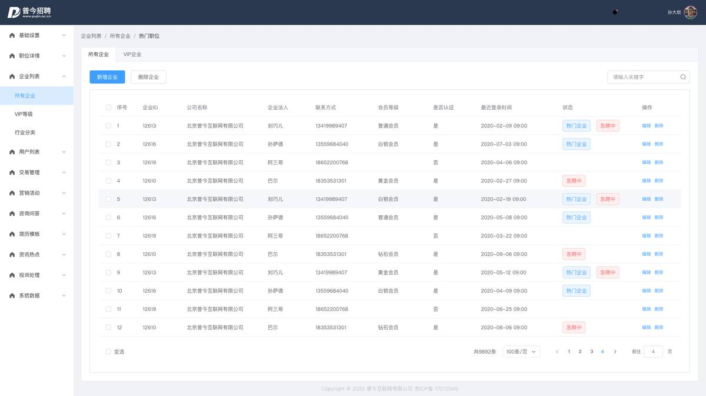
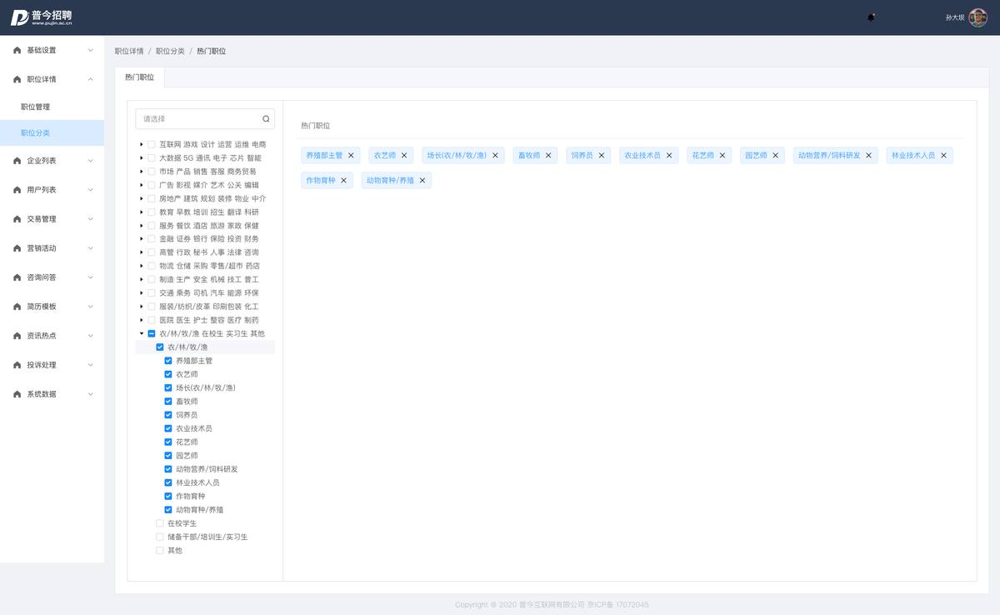
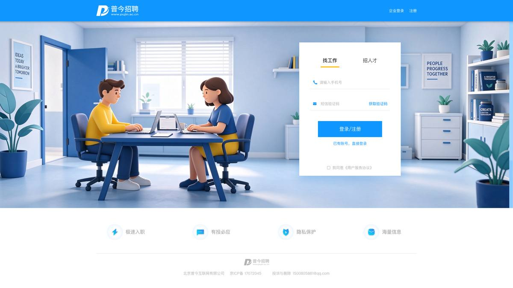
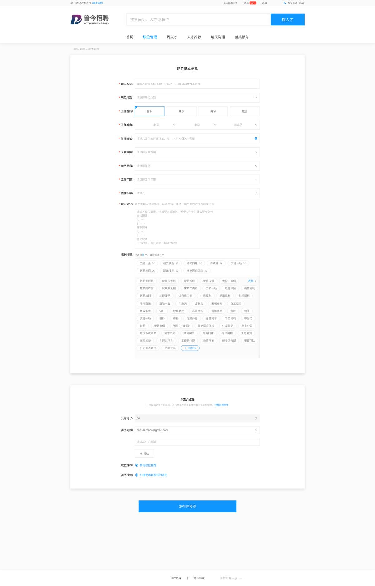

01 / SEEKER
求职者
发现机会 → 判断匹配 → 管理简历 → 投递与沟通。
信息组织以职位检索、简历状态、面试邀请和消息为中心。
一套覆盖求职者、企业 HR 与平台运营的招聘平台。前台按城市与职位分发流量，HR 工作台把职位、简历与沟通收在一处，运营后台管理企业、审核与付费道具。设计重点不是把三套页面做齐，而是让身份、职位、简历与付费规则在不同端点保持同一套语义。


求职者关注职位发现与求职进度，企业 HR 关注职位、简历和沟通效率，平台运营关注企业资质、内容、交易与权限。三个端点需要不同的信息密度，但底层的身份、职位、简历、企业对象必须能互相对应。
发现机会 → 判断匹配 → 管理简历 → 投递与沟通。
信息组织以职位检索、简历状态、面试邀请和消息为中心。
发布职位 → 搜索人才 → 筛选简历 → 邀约沟通。
工作台优先呈现高频对象和待办入口，付费道具在动作触发点前说明。
企业与职位审核 → 用户与交易管理 → 内容与道具配置。
后台以管理对象归组，使用列表、状态、权限和操作入口维护秩序。
前台承接城市与职位流量；求职者中心与 HR 工作台承接双方协作；运营后台管理平台秩序与商业化配置。页面与对象分工清晰，避免把所有能力塞进一个导航系统。

城市切换、职位搜索、企业检索、急聘内容与职场资讯构成公开流量入口。搜索、分类和城市层级同时服务页面查找与 SEO 路由。
求职者管理简历、投递和沟通；HR 管理职位、人才与面试。两侧围绕职位、简历、邀请和消息形成协同。

企业、职位、用户、交易、内容、投诉和系统配置通过分组菜单进入；列表状态与权限操作承担平台治理。

行业职位分类表为 31KB，城市选择资料覆盖 31 省市。它们不是普通的装饰型筛选项，而是前台搜索、HR 找人才和运营配置都需要依赖的基础数据。
这些判断来自需求汇总、接口文档、城市与职位分类资料、URL/TDK 布局文档及界面稿，不把文档归纳伪装成用户访谈结果。
个人与企业字段、权限与付费能力不同。
11 项筛选和大型分类库同时存在。
急聘、置顶、简历下载都可能触发付费。
前台页面既服务用户，也承接城市与职位搜索流量。
项目资料能支持对设计能力域的归纳，但未提供可确认的头衔细节、团队规模、项目周期或完整的个人参与深度；因此原型中不擅自补写。
每项围绕冲突、备选、选择、代价与证据展开。前三项关系身份、检索和商业化；后三项体现工作台、SEO 与后台治理的结构判断。
冲突：求职者与企业 HR 的注册字段、后续权限和付费能力不同，单一注册表单会混合两套身份语义。
备选：A 统一注册后再选身份；B 入口即分流，个人与企业各自成流程。
选择：B。个人走教育经历、工作经历与求职意向；企业走账号信息与会员认证。接口 /api/proving 先判断注册状态，再分流登录 / 注册。
代价：多套注册页与字段维护成本；换来身份从第一步就清晰，后续权限判断有据。

冲突：11 项筛选、31KB 行业职位分类表与 31 省市城市库同时压在搜索场景，平铺会让用户失去方向。
备选：A 全部条件一行铺开；B 按时间 / 薪资 / 学历 / 经验 / 企业等语义分组，分类与城市独立选择。
选择：B。条件分组，行业职位和城市走层级选择；同名筛选项在三端指向相同字段。
代价：多一层组件交互；换来筛选仍可扫读，跨端检索口径一致。依据：《11项选择内容》《行业职位分类表》《城市选择》。
冲突：急聘、置顶、简历下载都是付费动作，若支付页才告知规则，会让用户在临门一脚产生误导感。
备选：A 统一在支付环节说明；B 在触发入口前置显示价格、时长与权限差异。
选择：B。权限不足时在发布入口直接提示，急聘 / 置顶按钮旁说明价格与周期，再进入微信 / 支付宝扫码支付。
代价：入口文案更长、视觉更重；换来规则可见、付费决策发生在知情之后。价格为需求文档记录值，是否仍然有效需另行核实。

冲突：HR 需要在职位、简历、沟通和面试之间频繁切换，线性流程会让高频动作多点几层。
备选：A 线性流程向导；B 首页按对象分块，每块直通高频动作与待办数字。
选择：B。采用「职位管理 / 查看简历 / 人才管理」三行功能矩阵，并以待处理简历、未读消息、在招职位、面试安排四组待办卡提示优先事项。
代价：首页信息密度较高；换来 HR 一眼看到该先做什么。依据：HR 登录后首页画板与需求汇总。
冲突：城市站、职位分类页和企业详情页要承接搜索流量，若页面层级与 URL 层级不一致，TDK 模板就难以落到具体页面。
备选：A 先定视觉再补路由；B 页面层级对齐「城市 → 分类 → 个体」三级路由，TDK 按层级配置模板。
选择：B。采用城市子域名 + 城市 / 职位 / 企业三级 TDK 模板，前台信息架构与路由层级同构。
代价：页面模板数量上升；换来每类页面有对应检索入口与文案口径。依据：《普今招聘 URL 与 TDK 布局》。
冲突：后台需要同时管理企业、职位、会员、投诉、资讯、道具与账号权限，菜单平铺会变成冗长清单。
备选：A 全平铺；B 按管理对象归入一级菜单，二级菜单承载状态与明细。
选择：B。按基础设置、职位详情、企业列表、交易管理、营销活动、咨询问答、投诉处理、系统数据等 8 组管理对象归类。
代价：多一级展开动作；换来新功能能按对象归位，列表页面包屑、状态 Tab 和分页结构可复用。依据：招聘后台功能脑图和企业列表画板。
这三层代表端点职责，而不是每个用户都必须依序走完的一条固定流程。求职者与 HR 在协同层相遇，运营后台对整个生态提供管理支撑。
以下金额来自项目需求文档原文，仅作为该版设计的历史规则展示，不代表当前仍在执行的价格。展示重点是信息如何贴近动作，而不是鼓励付费。
非会员的免费职位发布额度、急聘与置顶道具的价格 / 周期、简历置顶的套餐时长与价格，均属于用户决策所需信息。设计策略是在发布、置顶、下载等入口附近呈现权限差异与成本说明。
URL 与 TDK 文档把城市站、职位分类页与企业详情页纳入分层模板。接口文档为登录、注册、职位列表、城市与企业搜索等功能提供数据契约。
页面层级与 URL、TDK 规则保持同构。三级模板用于城市、职位与企业的可检索入口；站点文档还定义首页与城市子域名规则。
POST /api/loginPOST /api/provingPOST /api/registerGET /api/postGET /api/hotcityGET /api/hotcompanyGET /api/hotindustryGET /api/rcompany资料中还有宣传页接口 /api/Propaganda。接口端点统计为 9 个；技术框架、数据库、鉴权实现和支付 SDK 未在现有资料中确认。
从 686 张界面稿中选取覆盖前台发现、求职者管理、HR 招聘协作、个人 / 企业注册和运营后台的 16 张页面。点击可放大查看；筛选器可按端点或名称搜索。
点击端点切换真实界面和设计解读。这里是作品说明型交互，不代表当前线上产品可操作状态。
城市切换与导航承接公开流量，搜索条服务找工作与搜人才；急聘职位、急聘企业和职场资讯分区呈现。
项目价值首先体现在可量化的设计资料覆盖与可追溯的业务文档，而不是没有来源的增长数字。
| 核查项 | 证据口径 | 结果 |
|---|---|---|
| 界面稿覆盖 | Sketch 元数据清点 | 686 / 686 |
| 前台 / 后台分布 | 元数据清点 | 210 + 476 |
| 搜索筛选项 | 需求文档 | 11 项 |
| 城市库覆盖 | 需求文档 | 31 省市 |
| 接口端点 | 接口文档 | 9 个 |
| 后台管理分组 | 功能脑图 | 8 组 |
| 线上用户量 / 转化 | 无可核实来源 | 待补充 |
| 开发框架 / 部署 | 无可核实来源 | 待补充 |
普今招聘适合重点展示的能力：复杂平台信息架构、三端协同、搜索筛选体系、商业化规则呈现、SEO 页面结构与运营后台治理。下一轮完善时，优先补齐真实项目周期、职责边界和可验证业务成效。